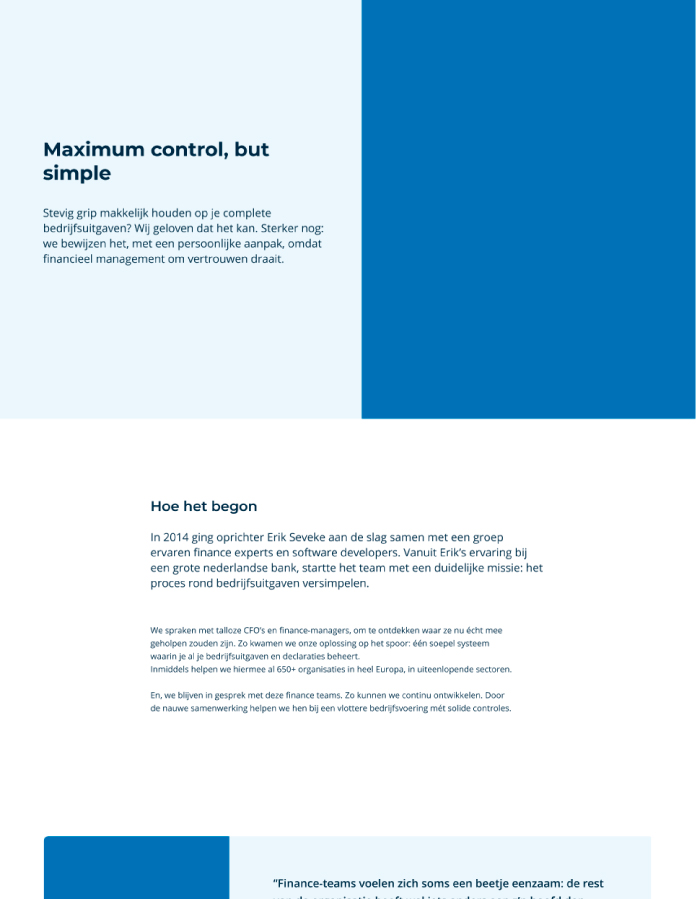

Simpledcard
Website redesign
I was tasked with making a new design for Simplecard's website to make it look more modern while still
holding their values and style. I created a layout that used their existing colour palette to give a fresh,
modern feel, and incorporated their logo with the overall design. I also added useful features that were
easy to use and fit with their values.
Link
to Homepage
Link to Pricing
Link to About

Sections fitting their content
Designing multiple options per section can be beneficial in determining the best option to use. By ordering them in terms of usefulness, it is easier to identify which would fit best. The most effective solutions can then be selected, ensuring the best possible outcome for the project.
Presenting multible options
I would present multiple options for the website, each of which would be suitable for the website. We could then discuss the pros and cons of each option and decide which choice is the best fit. We could also discuss how best to implement the chosen option.